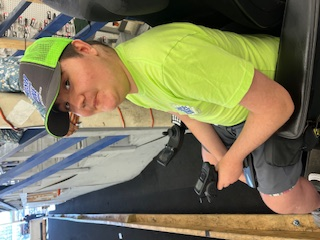
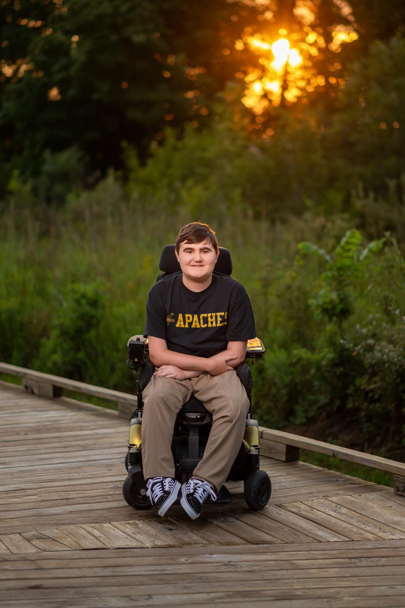

my name is Payton Kimpel and i race rc cars at my local hobbyshop. the kinds of rc cars that i drive are,
modified traxxas slash called iroc,
stock losi nascar with custom 3d printed on and of switch holder,
the traxxas slash stock is a trophy truck but i have modified it
into a carpet oval street stock by lowering the suspension and replacing
the body with a next gen camaro nascar body. the body was clear when i got it so
i panted it. then i added all of my decals the body. and the losi nascar
is half stock. The race track i race at is in Ashley indiana and is called finish line raceway and hobbyshop.

the types of video games i play are fps, racing, tycoon, adventure, and platformer

I have a brother named carter he is 6 years old and is going into the 1st grade. I have a dog named wookie i named him after chewbaka from star wars because when we got him he was a little ball of fur. i live with my mom and my grandma. i used to live with my mom grandma and grampa but recently my grampa passed away with a massive haert atack and i dont know my dad at all. The reason i like rc cars so much is because of our family frend nick he used to race rc cars with his kids in 1990. and he helped me to get started racing. i also love to play video games because i grew up playing mairo kart wii with my mom.
the way rc racing works is that you bring your rc stuf to th track and then you pay 20 dollars to race per car prices depend on what track you are at. then you sign up. the racing is split up into 4 races per car class. the first 3 races ar qualifiying races qualifying races are all about how maany laps you can do in 5 minuts this is used to put you into the correct final thre is four mains a b c d the a main is 100 laps the b main is 75 laps and the c and d main are 50 laps the winnner of the main bumps up to the next main.